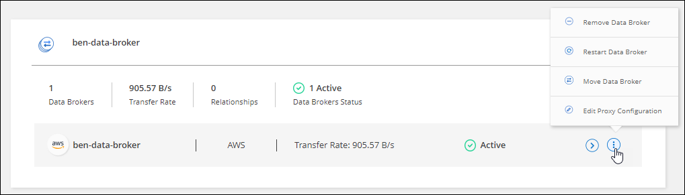
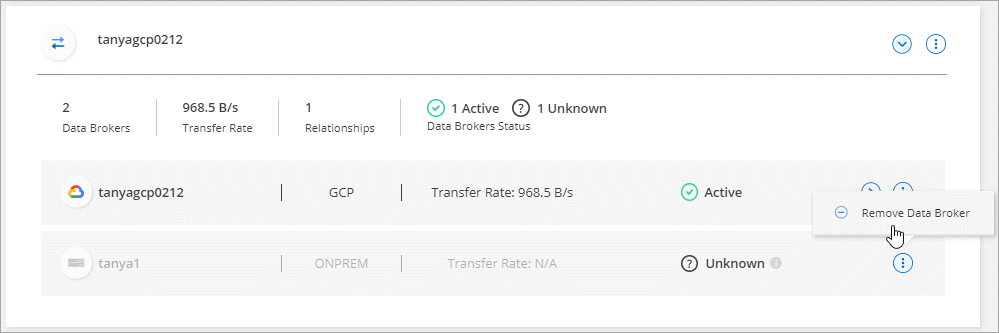

要求變更文件
要求變更文件 編輯此頁面
編輯此頁面 瞭解如何作出貢獻
瞭解如何作出貢獻管理資料代理群組
資料代理人群組會將來源位置的資料同步到目標位置。您所建立的每個同步關係、群組中至少需要一個資料代理程式。透過新增資料代理程式至群組、檢視群組相關資訊等方式來管理資料代理群組。
資料代理程式群組的運作方式
資料代理人群組可以包含一或多個資料代理人。將資料代理人集中在一起、有助於提升同步關係的效能。
群組可以管理多個關係
資料代理人群組一次可以管理一或多個同步關係。
例如、假設您有三種關係：
-
關係1由資料代理群組A管理
-
關係2由資料代理群組B管理
-
關係3由資料代理群組A管理
您想要加速關係1的效能、以便將新的資料代理程式新增至資料代理群組A由於群組A也管理同步關係3、因此關係的同步效能也會自動加速。
群組中的資料代理人數目
在許多情況下、單一資料代理程式可滿足同步關係的效能要求。如果沒有、您可以在群組中新增額外的資料代理人、以加速同步效能。但您應該先檢查其他可能影響同步效能的因素。 "深入瞭解如何判斷何時需要多個資料代理人"。
安全性建議
為確保資料代理機器的安全性、NetApp建議：
-
SSH不應允許進行X11轉送
-
SSH不應允許TCP連線轉送
-
SSH不應允許使用通道
-
SSH不應接受用戶端環境變數
這些安全建議有助於防止未獲授權的資料代理機器連線。
將新的資料代理程式新增至群組
建立新的資料代理程式有幾種方法：
-
建立新的同步關係時
-
在「 * 管理資料代理人 * 」頁面中、按一下「 * 新增資料代理人 * 」、即可在新群組中建立資料代理人
-
在 * 管理資料代理 * 頁面中、建立現有群組中的新資料代理程式
-
您無法將資料代理人新增至管理加密同步關係的群組。
-
如果您要在現有群組中建立資料代理程式、資料代理程式必須是內部資料代理程式或相同類型的資料代理程式。
例如、如果某個群組包含 AWS 資料代理程式、則您可以在該群組中建立 AWS 資料代理程式或內部部署資料代理程式。您無法建立Azure資料代理人或Google Cloud資料代理人、因為他們的資料代理人類型不同。
-
按一下 * 同步 > 管理資料代理人 * 。
-
按一下「 * 新增資料代理人 * 」。
-
依照提示建立資料代理程式。
如需協助、請參閱下列頁面：
-
按一下 * 同步 > 管理資料代理人 * 。
-
按一下動作功能表、然後選取 * 新增資料代理人 * 。

-
依照提示在群組中建立資料代理程式。
如需協助、請參閱下列頁面：
編輯群組名稱
隨時變更資料代理群組的名稱。
-
按一下 * 同步 > 管理資料代理人 * 。
-
按一下動作功能表、然後選取 * 編輯群組名稱 * 。

-
輸入新名稱、然後按一下「 * 儲存 * 」。
更新資料代理群組的名稱。 Cloud Sync
設定統一化組態
如果同步關係在同步處理期間發生錯誤、統一資料代理群組的並行處理有助於減少同步錯誤的數量。請注意、群組組組態的變更可能會減緩傳輸速度、進而影響效能。
我們不建議您自行變更組態。您應諮詢NetApp、瞭解何時變更組態及如何變更組態。
-
按一下*管理資料代理人*。
-
按一下資料代理群組的「設定」圖示。

-
視需要變更設定、然後按一下「統一化組態」。
請注意下列事項：
-
您可以選擇要變更的設定、而不需要一次變更全部四個設定。
-
將新組態傳送至資料代理程式之後、資料代理程式會自動重新啟動並使用新組態。
-
這項變更可能需要一分鐘的時間才能完成、而且可在Cloud Sync 整個視覺介面中看到。
-
如果資料代理程式未執行、因為Cloud Sync 無法與它通訊、所以它的組態不會改變。資料代理程式重新啟動後、組態將會變更。
-
設定統一化組態之後、任何新的資料代理人都會自動使用新組態。
-
在群組之間移動資料代理人
如果您需要加速目標資料代理群組的效能、請將資料代理程式從一個群組移至另一個群組。
例如、如果資料代理人不再管理同步關係、您可以輕鬆地將其移至另一個管理同步關係的群組。
-
如果資料代理人群組正在管理同步關係、而且群組中只有一個資料代理人、則您無法將該資料代理人移至其他群組。
-
您無法將資料代理移至或移出管理加密同步關係的群組。
-
您無法移動目前正在部署的資料代理程式。
-
按一下 * 同步 > 管理資料代理人 * 。
-
按一下
 展開群組中的資料代理程式清單。
展開群組中的資料代理程式清單。 -
按一下資料代理的動作功能表、然後選取*移動資料代理*。

-
建立新的資料代理人群組、或選取現有的資料代理人群組。
-
按一下*移動*。
將資料代理程式移至新的或現有的資料代理程式群組。Cloud Sync如果前一個群組中沒有其他資料代理人、Cloud Sync 則由NetApp刪除。
更新Proxy組態
若要更新資料代理程式的Proxy組態、請新增新Proxy組態的詳細資料、或編輯現有的Proxy組態。
-
按一下 * 同步 > 管理資料代理人 * 。
-
按一下
展開群組中的資料代理程式清單。 -
按一下資料代理的動作功能表、然後選取*編輯Proxy組態*。
-
指定Proxy的詳細資料：主機名稱、連接埠號碼、使用者名稱和密碼。
-
按一下 * 更新 * 。
更新資料代理程式以使用Proxy組態存取網際網路。Cloud Sync
檢視資料代理程式的組態
您可能想要檢視資料代理程式的詳細資料、以識別其主機名稱、 IP 位址、可用的 CPU 和 RAM 等項目。
提供下列資料代理程式的詳細資料： Cloud Sync
-
基本資訊：執行個體 ID 、主機名稱等
-
網路：地區、網路、子網路、私有 IP 等
-
軟體： Linux 發佈、資料代理程式版本等
-
硬體： CPU 和 RAM
-
組態：資料代理程式兩種主要程序的詳細資料、包括掃描器和傳輸器

掃描器會掃描來源和目標、並決定要複製的項目。傳輸者執行實際複製。NetApp 人員可能會使用這些組態詳細資料來建議可最佳化效能的行動。
-
按一下 * 同步 > 管理資料代理人 * 。
-
按一下
展開群組中的資料代理程式清單。 -
按一下
可查看有關數據代理的詳細信息。
解決資料代理程式的問題
顯示每個資料代理程式的狀態、協助您疑難排解問題。 Cloud Sync
-
識別任何狀態為「未知」或「失敗」的資料代理人。

-
將游標暫留在上方 圖示以查看故障原因。
-
修正問題。
例如、您可能只需要在資料代理程式離線時重新啟動、或是在初始部署失敗時移除資料代理程式。
從群組中移除資料代理程式
如果不再需要資料代理人、或是初始部署失敗、您可以將其從群組中移除。此動作僅會從 Cloud Sync 的記錄中刪除資料代理程式。您必須自行手動刪除資料代理人及任何其他雲端資源。
-
當您從群組中移除最後一個資料代理程式時、會刪除群組。 Cloud Sync
-
如果有使用該群組的關聯、您就無法從群組中移除最後一個資料代理。
-
按一下 * 同步 > 管理資料代理人 * 。
-
按一下
展開群組中的資料代理程式清單。 -
按一下資料代理的動作功能表、然後選取 * 移除資料代理 * 。

-
按一下「 * 移除資料代理人 * 」。
從群組中移除資料代理程式。 Cloud Sync
刪除資料代理群組
如果資料代理人群組不再管理任何同步關係、您可以刪除該群組、這樣會從Cloud Sync 停止執行所有資料代理人。
只會從Cloud Sync的記錄中刪除不含資料的資料代理人Cloud Sync 。您需要從雲端供應商手動刪除資料代理執行個體、以及任何其他雲端資源。
-
按一下 * 同步 > 管理資料代理人 * 。
-
按一下動作功能表、然後選取*刪除群組*。
-
若要確認、請輸入群組名稱、然後按一下*刪除群組*。
此功能會移除資料代理人並刪除群組。Cloud Sync